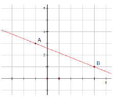
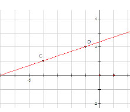
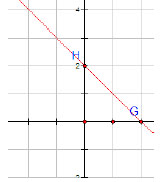
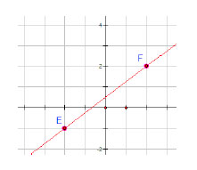
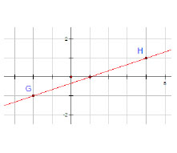

1.
Por simple inspección, determina la pendiente de cada recta. Calcula el ángulo de inclinación correspondiente:

Problemas de Geometría Analítica
Ejercicios de Pendiente y Angulo de Inclinación
Se puede deducir directamente la ecuación de una recta cuando son evidentes algunos elementos en una gráfica. Basta recordar que para el cálculo de la pendiente empleamos una razón entre dos segmentos, uno vertical de longitud (y2-y1) y otro horizontal de longitud (x2-x1), componentes de un triángulo rectángulo formado entre dos puntos como se indica en la siguiente gráfica:

El signo de la pendiente de una recta está relacionado con su ángulo de inclinación.

Guía de Evaluación al ingreso de la Educación Superior Tecnológica 2004
314 palabras
Ejercicios
2.
Por simple inspección, determina la pendiente de cada recta. Calcula el ángulo de inclinación correspondiente:

3.
Por simple inspección, determina la pendiente de cada recta. Calcula el ángulo de inclinación correspondiente:

4.
Por simple inspección, determina la pendiente de cada recta. Calcula el ángulo de inclinación correspondiente:

5.
Por simple inspección, determina la pendiente de cada recta. Calcula el ángulo de inclinación correspondiente:

6.
Por simple inspección, determina la pendiente de cada recta. Calcula el ángulo de inclinación correspondiente:

7.
Por simple inspección, determina la pendiente de cada recta. Calcula el ángulo de inclinación correspondiente:

8.
Por simple inspección, determina la pendiente de cada recta. Calcula el ángulo de inclinación correspondiente:

9.
Por simple inspección, determina la pendiente de cada recta. Calcula el ángulo de inclinación correspondiente:

10. Calcula el valor del ángulo que corresponde a los valores de las pendientes dados.
a) m1=0 α1=_____________
b) m2=0.5 α2=____________
c) m3=1 α3=____________
d) m4=5 α4=____________
e) m5=10 α5=____________
f) m6=-10 α6=___________
g) m7=-5 α7=____________
h) m8=-1 α8=____________
i) m9=-0.5 α9=___________
j) m10=-0.1 α10=__________